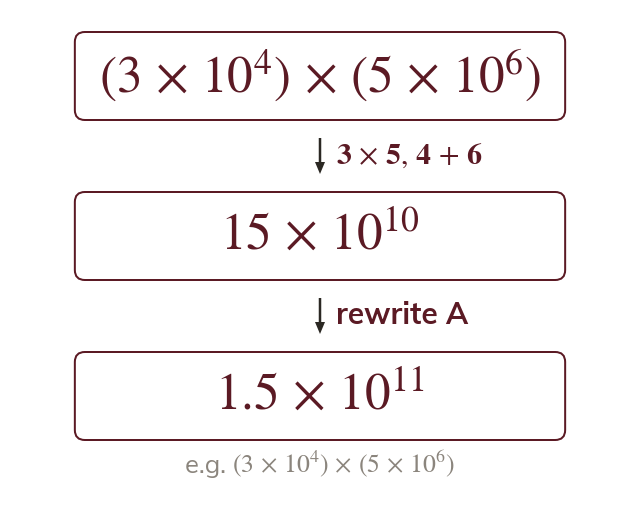

Multiply the parts separately
A product can be taken in any order. So the A values multiply and the powers of add.
The factors of a product can be taken in any order. So the A values are multiplied together, and the powers of are multiplied by adding their indices.